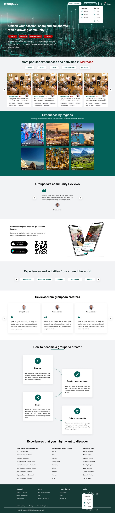

Project
Groupado
A platform where anyone with a skill can teach it
Groupado lets people turn what they know into experiences others can join, online or in person. I joined the startup as they opened their first Tunis office and spent eight months building out the main product (a website and a mobile application), with the homepage designed around search visibility from the start.

8 monthsTime on the project
2 officesTunis first, then Dubai